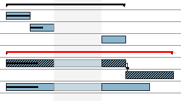
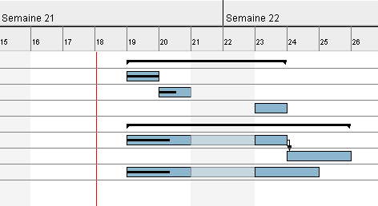

Divers
Cette section regroupe diverses fonctionnalit�s relatives � la gestion des t�ches.
Chemin critique
GanttProject est capable d'afficher le chemin critique d'un projet dans la vue Gantt.
Cliquez sur le bouton Chemin ciritique pour
afficher le chemin critique du projet. Les t�ches critiques sont hachur�es, les t�ches m�res critiques sont rouges.

Vous pouvez demander � ce que l'affichage du chemin critique ne soit plus actif en cliquant � nouveau sur le
bouton Chemin critique.
Alertes de retards
GanttProject peut identifier les retards qui apparaissent sur le planning. Le retard, pour GanttProject,
est d�fini comme suit :
une t�che est en retard si sa date de fin est ant�rieure ou �gale � la date d'aujourd'hui et que son avanc�e n'est pas de 100 %.
Deux types de retards sont identifiables :
- retards normaux ;
- retards affectant les t�ches critiques
 .
.
Les ic�nes ci-dessus, signalant les retards, apparaisent dans la colonnes Info du tableau des t�ches.
N.B. : Pour �tre s�r de voir les retards, assurez-vous que la colonne Info est visible.
Cacher des t�ches
GanttProject vous permet de cacher certaines t�ches du diagramme pour plus de lisibilit�. Pour ce faire, s�lectionnez les t�ches que vous voulez cacher, puis cliquez avec le bouton droit
dans le tableau de t�ches, puis cliquez sur Cacher les t�ches s�lectionn�es.
Pour afficher les t�ches pr�c�demment cach�e, cliquez sur Afficher les t�ches cach�es.
Ins�rer des lignes s�paratrices
Pour gagner en lisibilit�, il est possible d'ins�rer des lignes s�paratrices (lignes vides) dans le
tableau des t�ches.
Ins�rer un ligne s�paratrice, cliquez sur Ins�rer un ligne s�paratrice.
Annuler/R�tablir
D�sormais, GanttProject supporte l'annulation et le r�tablissement d'actions (Undo/Redo). Vous pouvez utiliser au choix :
- les boutons et ;
- les menus Edition, puis Annuler ou R�tablir ;
- les raccourcis clavier Crtl+Z et Ctrl+Y.
Ouvrir la fen�tre des propri�t�s des t�ches
Par d�faut, lors de la cr�ation d'une t�ches vous pouvez directement entrez son nom dans le tableau. Une option permet
d'ouvrir la fen�tre de propri�t�s d'une t�che � sa cr�ation.
- menu Edition, Pr�f�rences ;
- option G�n�ral, Param�tres ;
- cochez la case Ouvrir la fen�tre de propri�t�s.
Ligne rouge pour aujourd'hui
Vous pouvez afficher une ligne verticale rouge � la datre d'ajourd'hui dans le diagramme de Gantt :

- menu Edition, Pr�f�rences ;
- option G�n�ral, Param�tres ;
- cochez la case Ligne rouge pour aujourd'hui.
Pr�fixe pour le nom des nouvelles t�ches
Vous pouvez d�finir le nom par d�faut des t�ches lors de leur cr�ation :
- menu Edition, Pr�f�rences ;
- option G�n�ral, Param�tres ;
- �ditez le champ Pr�fixe du nom de t�che.
Couleur par d�faut d'une t�che
Vous pouvez modifier la couleur par d�faut des t�ches :
- menu Edition, Pr�f�rences ;
- option G�n�ral, Couleurs ;
- cliquez sur le bouton Couleur en face de T�che ;
- choisissez la couleur par d�faut d�sir�e.
Modifier les propri�t�s de plusieurs t�ches
Il est possible de modifier les propri�t�s de plusieurs t�ches en une seule op�ration :
- s�lectionnez les t�ches dont vous voulez modifier les propri�t�s ;
- cliquez sur le bouton
 ;
;
- la fen�tre des propri�t�s s'ouvre ;
- modifiez les valeurs que vous voulez affecter � toutes les t�ches ;
- validez.
N.B. : Uniquement les valeurs modifi�es seront appliqu�es � toutes les t�ches
s�lectionn�es. Les autres valeurs ne seront pas modifi�es.